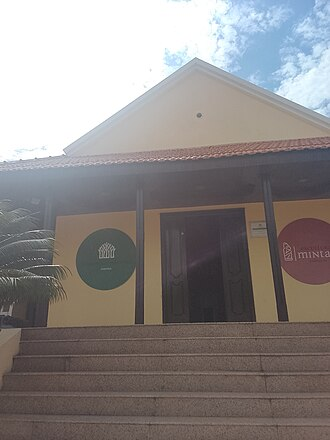

Museus de Angola
11 museus em Angola.
Na página de cada lugar: horário, preço em Kwanza (quando conhecido), como chegar, as fontes e a data de verificação. Horários e preços mudam: confirme antes de ir.
Luanda
-

Museu Nacional de Antropologia
Coleção sobre as culturas dos povos de Angola.
Foto: Fabio Vanin · CC BY-SA 3.0
-

Museu Nacional da Escravatura
Museu junto ao mar sobre a história do tráfico de escravos.
Foto: João Sousa · CC BY-SA 3.0
-

Museu da Moeda
A história do dinheiro em Angola, com entrada gratuita.
Foto: David Stanley · CC BY 2.0
-

Museu Nacional de História Natural
A fauna de Angola num edifício de 1956 no Kinaxixi.
Foto: Fabio Vanin · CC BY-SA 3.0
-
Memorial às Vítimas dos Conflitos Políticos
Memorial às vítimas dos conflitos de 1975 a 2002, inaugurado em outubro de 2026.

.jpg){kind=link}


Benguela
-

Museu Nacional de Arqueologia de Benguela
Museu num antigo armazém de escravos junto ao mar.
Foto: David Stanley from Nanaimo, Canada · CC BY 2.0

Cabinda
-

Museu Regional de Cabinda
A história de Cabinda em mais de 500 peças.
Foto: Conckot vernath lihel · CC0

Huambo
-
Museu Regional do Huambo
A vida no planalto central, em 3000 peças.
Huíla
-
Museu Regional da Huíla
As culturas dos povos do sul de Angola.
Lunda Norte
-
Museu do Dundo
O primeiro museu de Angola, com arte cokwe.
Zaire
-
Museu dos Reis do Kongo
A história do Reino do Kongo no antigo palácio real.
Mais guias
- Agenda de eventos
- O que fazer em Luanda
- Restaurantes, bares e discotecas em Luanda
- Centros comerciais em Luanda
- Desporto e ginásios em Luanda
- O que fazer em Benguela e no Lobito
- O que fazer no Lubango e na Huíla
- O que fazer no Huambo
- O que fazer em Cabinda
- O que fazer no Namibe (Moçâmedes)
- O que fazer em Malanje
- Praias de Angola
- Parques nacionais de Angola
- Natureza e paisagens de Angola
- Hotéis e alojamento em Angola
- Transportes em Angola: aeroportos, comboios e autocarros
- Casas de câmbio em Angola
Museums in Angola
11 museums in Angola. Each place page has opening hours, prices in Kwanza and directions. The Tuende app is available in Portuguese, English, French and Spanish.